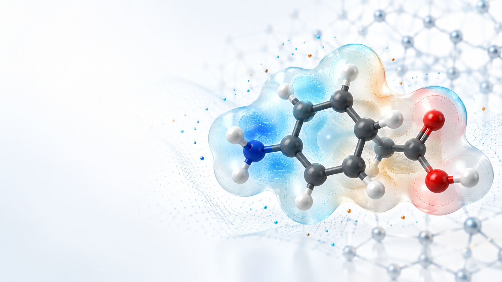

Reproducible
Every lesson is built to run again, adapt, and share.

AI-assisted learning for molecular science
Explore quantum chemistry and molecular simulation with AI-assisted explanations, visual examples, and a growing video curriculum.
Supported by RSC – EDI

Equality, Diversity & Inclusion

Why AI4CompChem
Computational chemistry can feel like a wall of theory and tooling. This project turns it into a clear path: learn one concept, run one experiment, and understand what the result means.
Every lesson is built to run again, adapt, and share.
See structures, energies, and trajectories take shape.
Build useful workflows from the very first module.
Learning path
Start with quantum foundations, build from basis sets and Hartree–Fock to DFT, then explore potential energy surfaces, reactions, and molecular simulations.
Curriculum in development. Explore the topic outlines below. Short videos, worked calculations, and exercises are being developed topic by topic.
Build the computational and quantum concepts needed for the methods ahead.
Learn how basis sets and electronic-structure methods work together, from HF to DFT.
Connect energy landscapes to molecular structures, vibrations, and reaction pathways.
Use interaction potentials to explore molecular motion, ensembles, and sampling.
Inside the workspace
Notebooks keep theory, code, and results together. Change a parameter, rerun the model, and watch the molecular picture respond.
Browse notebooks ↗from ase.build import molecule
from ase.calculators.emt import EMT
system = molecule('H2O')
system.calc = EMT()
energy = system.get_potential_energy()
print(f"Energy: {energy:.3f} eV")Keep exploring
Use the repository as your lab bench: run examples, experiment in notebooks, and improve the material as you learn.
Ready when you are